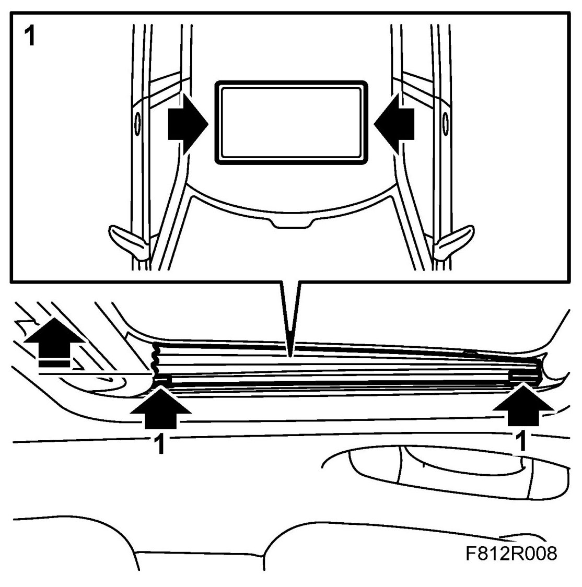
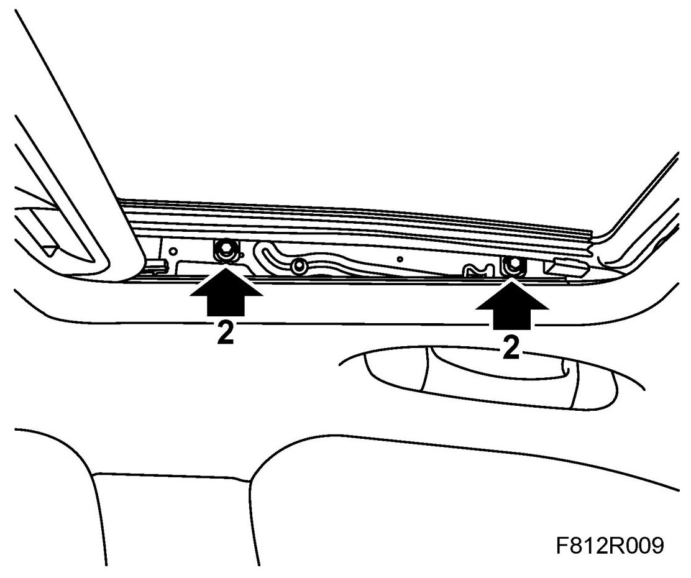
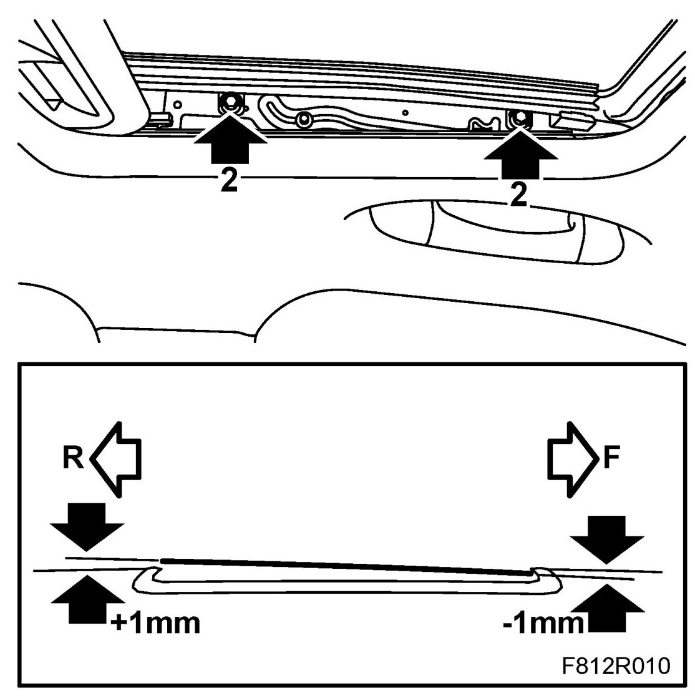
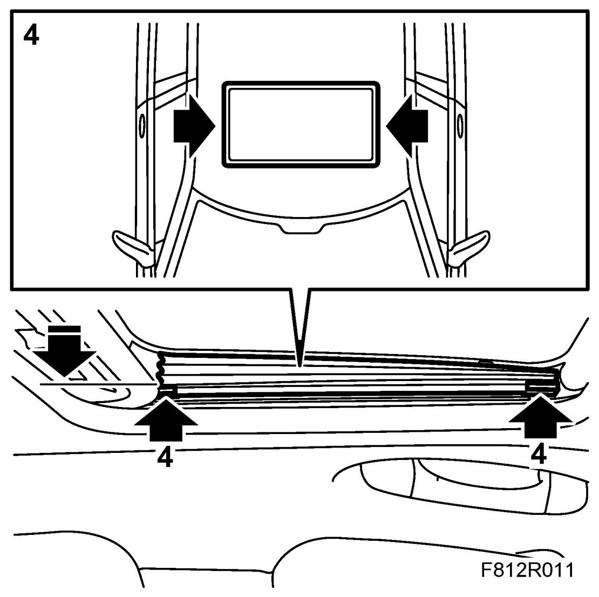

Sunroof (Glass Hatch)
Sunroof (Glass Hatch)
Removing
1. Cars with side protection: Carefully remove the glass hatch side protection from the clips in the front and rear edge on both sides.

2. Cars with side protection: Move the side protection to the side.
Remove the glass hatch retaining bolts on both sides.

3. Lift off the glass hatch.
Fitting
1. Place the glass hatch in position.
2. Attach the glass hatch's securing bolts and adjust the glass hatch's front and back edges so that the edges are level with the edges of the roof.

IMPORTANT: The front of the hatch must not be too high.
3. Tighten the glass hatch's securing bolts.
4. Cars with side protection: Fit the glass hatch side protection to the clips.

5. Check the function.